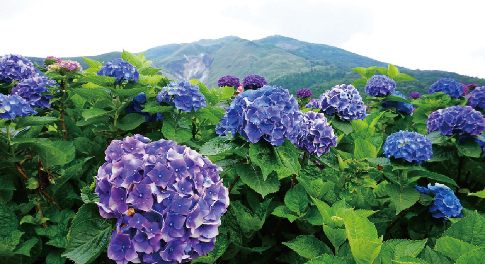
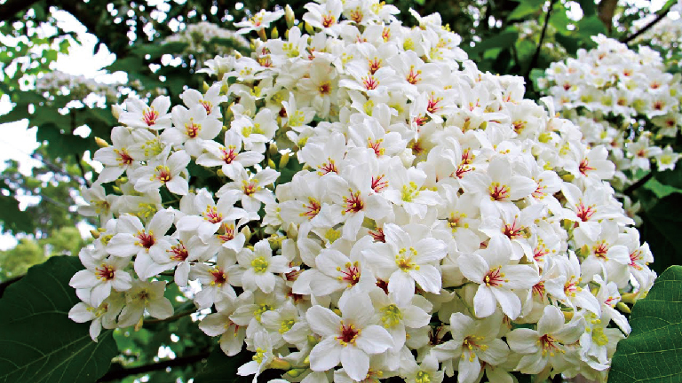
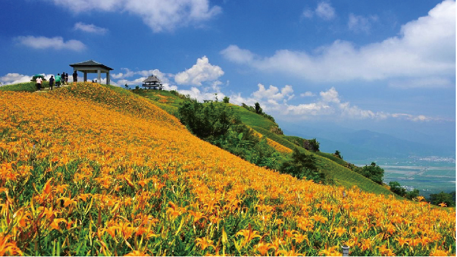

一起賞花吧！
台灣各地生長著豐富多樣的美麗花卉，而在全台各縣市鄉鎮裡，到了每年代表花卉的盛開時期，也有針對當季花卉舉辦各式的花卉展、花季等活動，都是一同出遊踏青的行程首選。誰說賞花只在早春？我們為你整理全台整年度的賞花資訊，讓你及早規劃年度賞花之旅！
北部 苗栗 四月雪小徑
花期 : 每年三～五月
四月雪小徑位於苗栗縣三義鄉，這條步道一路通往山上的慈濟茶園，途中會經過約 200 公尺長的油桐樹林，形成陰涼的環境；加上步道鋪了枕木，走起來很舒服愜意。


中部 台中 武陵農場櫻花季
花期 : 每年二～三月
武陵櫻花季說是全台最大最美也不為過，一年一次的賞櫻盛會被譽為是一生必去朝聖的台灣景點之一。不但能夠沐浴在初春溫煦的陽光之中，還能被武陵的粉紅落櫻給包圍，想像一下那夢幻的畫面，絕對不會輸給日本的。
南部 台南 白河蓮花季
花期 : 每年六～八月
白河區在花季隨處可見盛開的蓮花，當然也會有不少攝影愛好者前往拍攝出淤泥而不染的蓮花，想賞花的民眾，快趁著周休假日，安排一趟台南白河賞蓮之旅。
